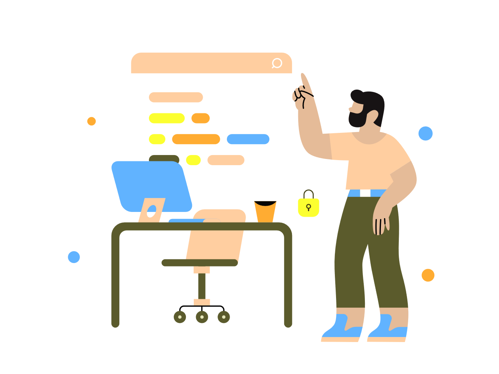

<ion-content fullscreen class="ion-padding" scroll-y="false">

  <ion-slides>
    <ion-slide>
      <div class="slide">
        
        <h2>Bienvenido a Registrapp</h2>

        <p>
          La <b>aplicación móvil</b> que te ayudará con la asistencia en clases
        </p>
        <p>
          Un proyecto de DuocUC enfocado en alumnos y profesores para la organización de labores de asistencia en la
          sala de clases a fin de evitar errores y optimizar el tiempo de estudio
        </p>
        
      </div>
    </ion-slide>

    <ion-slide>
      
      <h2>¿Cómo funciona?</h2>
      <p>
        <b>Es muy simple</b>.

      </p>
      <p>
        Inicia sesión con tu correo institucional
      </p>
      <p>
        El sistema detectará si tu usuario corresponde a Docente o Alumno.
      </p>

    </ion-slide>

    <ion-slide>
      
      <h2>¿Eres docente?</h2>
      <p><ion-icon name="list-outline"></ion-icon>
        Si eres <b>profesor</b>, ingresa en <a
          href="https://registrapp-33925.web.app">https://registrapp-33925.web.app.</a>

      </p>
      <p>Al iniciar, se desplegará una lista con tus secciones asignadas</p>
      <p>Ingresa a la sección donde te encuentras realizando la clase y habilita la asistencia <ion-icon
          name="add-circle"></ion-icon></p>
      <p><ion-icon name="qr-code-outline"></ion-icon> Se desplegará un código QR donde los alumnos podrán registrarse
        y
        quedar presente</p>
    </ion-slide>

    <ion-slide>
      
      <h2>¿Eres Alumno?</h2>
      <p>Si eres <b>alumno</b> ingresa a la Mis secciones donde encontrarás todas tus asignaturas <ion-icon
          name="documents-outline"></ion-icon>
      </p>
      <p><ion-icon name="newspaper"></ion-icon> Ingresa a tu sección donde te encuentras realizando la clase</p>
      <p><ion-icon name="analytics-outline"></ion-icon> Selecciona tu asignatura actual. Se mostrarán datos de la
        asignatura, como también de la asistencia</p>
      <p> Escanéa el código QR que habilitó tu profesor y <strong>¡listo!</strong> &nbsp; <b>¡Ya estás
          presente!</b>&nbsp;
        <ion-icon name="camera"></ion-icon>
      </p>
    </ion-slide>

    <ion-slide>
      
      <h2>¿Estás Listo?</h2>
      <ion-button fill="clear" color="tertiary" [routerLink]="['/login']">Iniciar sesión <ion-icon slot="end"
          name="arrow-forward"></ion-icon></ion-button>
    </ion-slide>
  </ion-slides>


</ion-content>